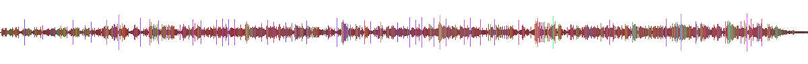

Moodbars are back.
Built for audio developers and OSS contributors. One Rust core. CLI + Web now. Native bindings next.
- Legacy-compatible raw moodbar output.
- Modern SVG and PNG rendering paths.
- WASM bindings for browser-first workflows.
- Amarok-era idea, portable and hackable.
Historical Context
Moodbars started as color timelines for tracks and playlists in the Amarok ecosystem. If you are new to it, these references explain the original idea:
What A Moodbar Looks Like

# CLI
cargo run -p moodbar -- generate -i input.ogg -o output.svg --format svg
# Browser demo
make wasm-docs
python3 -m http.server
# open http://localhost:8000/docs/wasm-demo.html